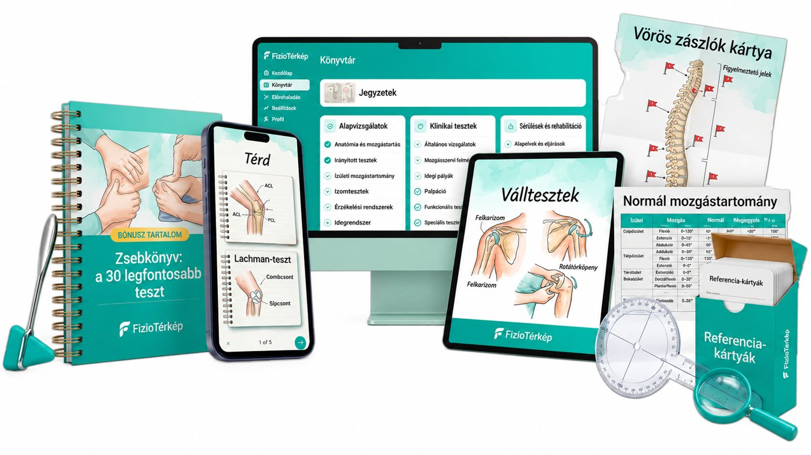
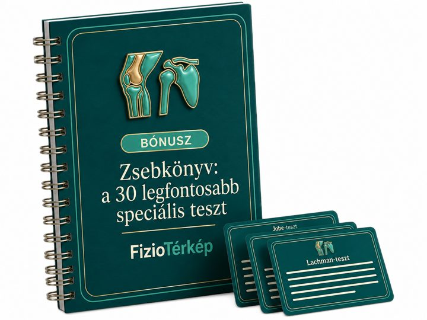
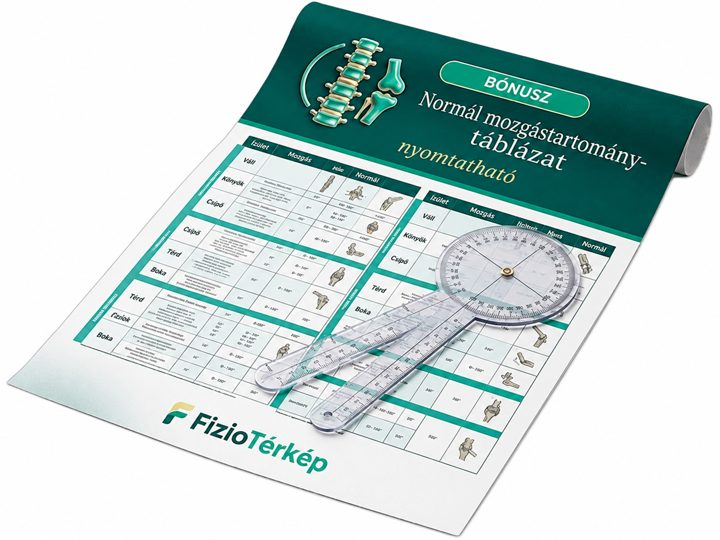
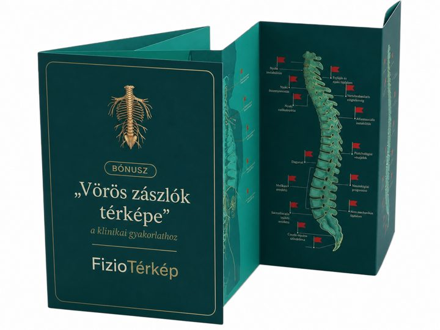

FizioTérkép · 54 téma és 160+ oldalnyi vizuális térkép az állapotfelméréstől a rehabilitációig · 3 ajándék bónusz
Gyógytorna az állapotfelméréstől a rehabilitációig, vizuális térképekkel és tényleg megmaradó ismétléssel. Az alkalmazást telefonon és számítógépen is bármikor megnyithatod erről az oldalról.

54 téma vizuális térképekkel, adatlap minden tesztről és kórképről, minden oldalon 2 ellenőrző kérdés, memória mód (Leitner-rendszer), 3 szint (Alap, Középhaladó, Klinikai), sorozatok, pontok, jártasság és kitüntetések.
Alkalmazás megnyitása › 📄PDF-változat (letöltés és nyomtatás)Mind az 54 téma, 201 oldal: vizuális térképek, adatlapok, klinikai lényeg, ellenőrző kérdések, a végén megoldások magyarázattal.
PDF megnyitása · 23.1 MB3 ajándék bónusz

A vizsgákon és a klinikai gyakorlaton leggyakoribb 30 speciális teszt: kivitelezés, a pozitív eredmény jelentése és a vizsgált struktúra. Zsebméret (A6).
PDF megnyitása / mentése · 33 oldal · 0.4 MB
Referenciaértékek minden ízülethez a válltól a bokáig, a jobb és bal oldali mért érték beírásához (A4, 2 oldal).
PDF megnyitása / mentése · 2 oldal · 0.2 MB
A jelek, amelyek szerint a fájdalom nem mechanikai eredetű és orvosi vizsgálat kellhet, testtájanként egy lapon (fekvő A4).
PDF megnyitása / mentése · 1 oldal · 0.1 MBÍgy kezdj neki
- Tedd ki az alkalmazást a kezdőképernyőreNyisd meg az alkalmazást, majd a böngésző megosztás menüjében válaszd a „Hozzáadás a kezdőképernyőhöz” lehetőséget. Legközelebb egy koppintással nyílik.
- Kezdd az 1. témával, és válaszolj a 2 kérdésreMinden téma 3 oldal (vizuális térkép, adatlap, klinikai lényeg), mindegyik végén 2 kérdéssel.
- Naponta egyszer memória módA rossz válaszok másnap, a már tudottak egyre nagyobb időközönként jönnek vissza, automatikusan.
- Nyomtasd ki a bónuszokatA zsebkönyvet a köpenyed zsebébe, a mozgástartomány-táblázatot és a vörös zászlókat a kezelőágy mellé.
Ma nyisd meg az alkalmazásban az 1. témát („Síkok és tengelyek”), és válaszolj az első 2 kérdésre. 10 perc alatt végzel egy témával.
Tanulási és referenciaanyag gyógytornász hallgatóknak és szakembereknek. Nem helyettesíti a képzett egészségügyi szakember vizsgálatát. A haladásod az adott eszköz böngészőjében tárolódik (eszközönként külön).